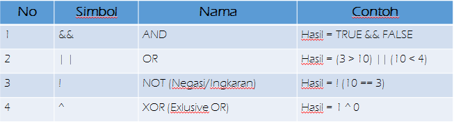
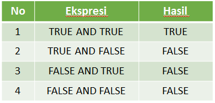
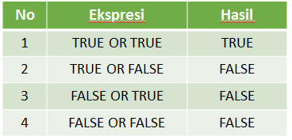
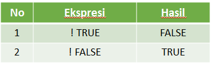
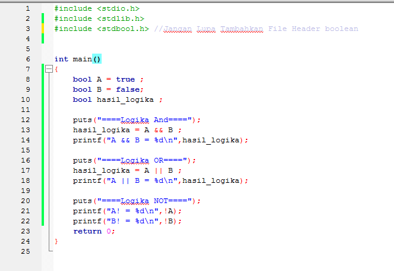
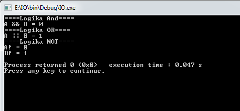
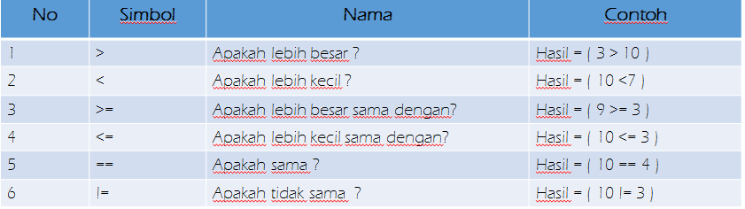
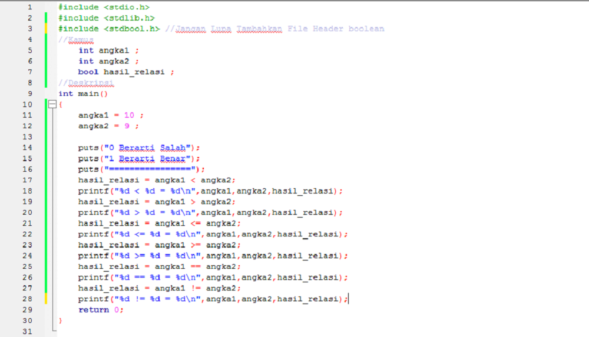
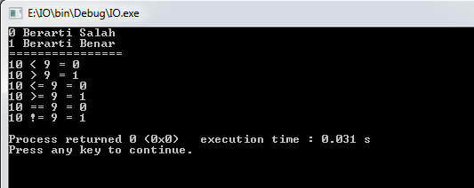

Bagian 4 : Operator Logika dan Rasional Dalam Bahasa C

Operator Logika
Operator logika digunakan untuk menghubungkan dua buah operasi relasi menjadi sebuah ungkapan kondisi. Hasil dari operator logika ini menghasilkan nilai boolean 1 (true) atau false (0). Berikut tabel dari operator logika.

Operator Logika And
Operator logika AND digunakan untuk menghubungkan dua atau lebih ekspresi relasi, akan dianggap BENAR, bila semua ekspresi relasi yang dihubungkan bernilai BENAR. 1 untuk nilai BENAR dan 0 untuk nilai salah. Operasi logika AND dilambangkan dengan &. Untuk lebih jelasnya dapat kita lihat dari tabel berikut.

Operator Logika OR
Operator Logika OR merupakan operasi yang hanya kan menghasilkan nilai BENAR (1) jika salah satu variabelnya bernilai BENAR (1) serta akan menghasilkan nilai salah jika kedua variabelnya bernilai salah. Operasi OR dilambangkan dengan dua garis tengah (||). Berikut tabel kebenarannya :

Operator NOT
Operasi INVERS/NOT merupakan suatu operasi yang menghasilkan keluaran nilai kebalikannya. Operasi INVERS/NOT dilambangkan dengan tanda seru(!). Operasi ini akan mengubah logika 1 menjadi 0 dan sebaliknya. Berikut tabel kebenarannya:

Contoh

Output

Operator Rasional
Operator relasional digunakan untuk melakukan perbandingan terhadap 2 nilai operand, umumnya hasil yang diberikan dari operator rasional berupa nilai Boolean (True atau False).

Contoh

Output
